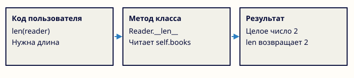
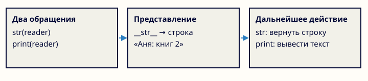
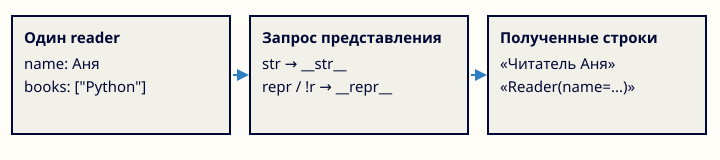
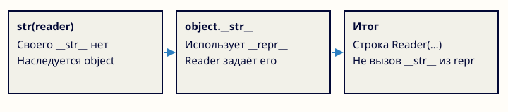
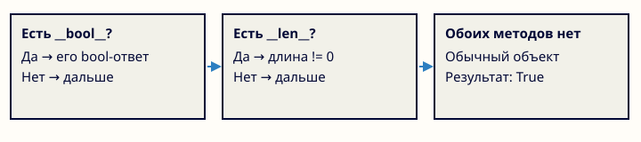
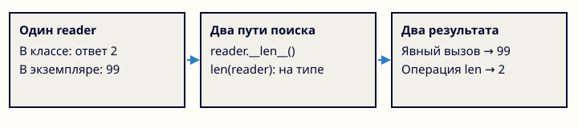
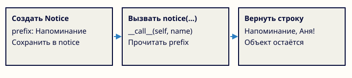

Глава 8.8
Магические методы
Подключим объект к знакомым операциям Python: длине, строковому представлению, проверке истинности и вызову. Разберём, какие методы выбирает язык и что они должны вернуть.
- Перед началом
- Предыдущие главы модуля 8; функции, списки и исключения
- После главы
- Объяснять связь стандартной операции и специального метода, различать str и repr.
- Среда
- Python 3.11 и новее · самостоятельные примеры
- Основа
- Модуль 8 исходного справочника · с. 557–567
§1 Операция языка выбирает специальный метод
Вызов reader.book_count() понятен тому, кто знает наш класс. Но в Python уже есть общая операция len(obj). Чтобы объект Reader поддерживал её, класс должен определить специальный метод __len__. Название book_count для этой операции ничего не означает.
Специальные, или магические, методы — методы с установленными языком именами и назначением. Двойные подчёркивания с двух сторон часто называют dunder. Они не делают метод приватным. Знакомый __init__ — тоже специальный метод, его задача — настройка уже созданного экземпляра.
class Reader:
def __init__(self, name):
self.name = name
self.books = ["Python", "Алгоритмы"]
def book_count(self):
return len(self.books)
def __len__(self):
return len(self.books)
reader = Reader("Аня")
print(reader.book_count())
print(len(reader))2 2
Оба метода читают один список, поэтому получаются одинаковые числа. Различается способ запуска: имя book_count выбирает программист в вызове, а __len__ предусмотрен механизмом len. Внутри __len__ вызов len(self.books) считает элементы вложенного списка. Повторного вызова того же метода читателя здесь нет.
Проследим путь стандартной операции. Стрелки показывают передачу управления, затем получение результата.

Стрелки — путь выполнения len для этого класса. Метод определён в классе Reader.
Средний блок — реализация поведения нашего типа. Правый — число, которое получает вызывающий код. Наличие списка внутри читателя не подключает эту операцию автоматически: без подходящего специального метода len(reader) завершился бы ошибкой.
По-простому: стандартный запрос к разным билетам
Сотруднику задают общий вопрос о числе записей. У формы есть предусмотренная процедура ответа.
Что есть что. общий запрос — len(reader); процедура типа — __len__; число записей — результат.
Операция должна иметь понятный смысл. Для нашего Reader длина означает число выданных книг. Дальше разберём ещё одну стандартную потребность: показать читателя текстом.
§2 __str__: строка для пользовательского сообщения
Для подписи к читательскому билету подойдёт текст «Аня: книг 2». Определим __str__, который возвращает понятную строку. Он не обязан выводить её на экран: вывод и получение строки — отдельные действия.
class Reader:
def __init__(self, name):
self.name = name
self.books = ["Python", "Алгоритмы"]
def __str__(self):
return f"{self.name}: книг {len(self.books)}"
reader = Reader("Аня")
text = str(reader)
print(type(text).__name__)
print(text)
print(reader)str Аня: книг 2 Аня: книг 2
str(reader) получает результат __str__ и сохраняет его в text. Первая печать подтверждает тип результата: str. Следующая строка выводит уже готовую строку. Последний print(reader) сам запрашивает строковое представление объекта и выводит его.
Покажем два пути к одному тексту. В первом путь разделён присваиванием, во втором преобразование выполняется при печати.

Стрелки — этапы двух обращений. Последний блок различает возвращение строки и вывод на экран.
Средний блок не печатает сообщение сам. Если заменить return на print внутри __str__, метод выведет текст, но вернёт None. Операция str ожидает строку и вызовет TypeError. Для специальных методов тип результата является частью требований.
По-простому: подготовить подпись для билета
Сотрудник составляет подпись на отдельном листке. Её можно сохранить или поместить на табло.
Что есть что. составление — __str__; переданный текст — возвращённая строка; табло — print.
Человекочитаемый текст удобен в сообщении, но для поиска ошибки часто нужны название класса и точные значения. Для этого предусмотрено другое представление.
§3 __repr__: представление для разработчика
В служебной карточке нужны название формы и точные записи. repr(obj) запрашивает диагностическое представление объекта — текст для проверки его данных. Его определяет метод __repr__. Полезное представление позволяет отличить тип объекта и увидеть нужные для проверки данные; оно тоже должно быть строкой.
class Reader:
def __init__(self, name):
self.name = name
self.books = []
def __str__(self):
return f"Читатель {self.name}"
def __repr__(self):
return f"Reader(name={self.name!r}, books={self.books!r})"
reader = Reader("Аня")
reader.books.append("Python")
print(str(reader))
print(repr(reader))
print([reader])
print(f"{reader!r}")Читатель Аня Reader(name='Аня', books=['Python']) [Reader(name='Аня', books=['Python'])] Reader(name='Аня', books=['Python'])
Внутри f-строки запись !r запрашивает repr для значения. Поэтому имя показано с кавычками, а список — со скобками. При выводе списка Python использует диагностические представления его элементов через repr. Последняя строка явно выбирает тот же способ через !r.
Разведём запросы по назначению. Для одного экземпляра получаются два текста с разным назначением.

Стрелки — преобразование одного объекта. В среднем и правом блоках строки сопоставлены по порядку.
Верхняя строка среднего блока приводит к краткому сообщению, нижняя — к диагностике. Хороший repr по возможности напоминает выражение для восстановления объекта, но это не гарантия. Наш Reader(name=..., books=...) нельзя передать этому конструктору: параметра books в нём нет. Эта строка описывает состояние. Для восстановления по ней понадобился бы отдельно определённый формат.
По-простому: табличка и служебная карточка
Для посетителя достаточно понятной подписи. В служебной карточке нужны тип и значения, чтобы проверить запись.
Что есть что. подпись — str; служебная карточка — repr; сам reader при обоих запросах остаётся тем же.
Оба метода можно определить вместе. Если один из них отсутствует, Python использует определённый запасной путь; он не симметричен.
§4 Как str и repr работают без одного из методов
Для билета без краткой подписи можно взять текст служебной карточки. Если класс не переопределил __str__, унаследованная реализация object.__str__ использует представление __repr__. Поэтому полезный __repr__ помогает и обычной печати. Обратного перехода нет: repr не выбирает пользовательский __str__.
class Reader:
def __init__(self, name):
self.name = name
def __repr__(self):
return f"Reader({self.name!r})"
reader = Reader("Аня")
print(str(reader))
print(repr(reader))
class Label:
def __str__(self):
return "Библиотека"
label = Label()
print(str(label))
print(type(label).__repr__ is object.__repr__)Reader('Аня')
Reader('Аня')
Библиотека
TrueУ Reader определён только __repr__, и оба преобразования дают одинаковый текст. У Label определён только __str__. Проверка в конце показывает, что __repr__ остался стандартным методом object. Его точный текст зависит от объекта и обычно включает обозначение типа и адресоподобную часть, поэтому мы не фиксируем его в выводе.
Схема показывает путь для Reader, у которого нет собственного __str__. Не переносите эту стрелку в обратную сторону.

Стрелки — запасной путь str для простого класса Reader. repr не использует пользовательский __str__.
В левом блоке используется унаследованный метод object. Своего переопределения в Reader нет. Правый блок возвращает строку из нашего __repr__. Если не определён ни один метод, стандартное представление доступно, но обычно мало говорит о содержимом.
По-простому: подпись по служебной карточке
Если краткая подпись не подготовлена, сотрудник берёт текст служебной карточки. Наличие краткой подписи само по себе карточку не создаёт.
Что есть что. краткая подпись — __str__; служебное описание — __repr__; запасной путь задаёт object.__str__.
У других операций тоже есть свои правила выбора. В частности, истинность объекта может зависеть от специального метода длины.
§5 Истинность объекта: __bool__, затем __len__
В билете можно проверять активность обслуживания или наличие книг. Операции bool(obj) и условие if obj проверяют истинность объекта. Сначала используется __bool__. Если его нет, Python обращается к __len__: нулевая длина означает False, положительная — True. Без обоих методов объект по умолчанию считается истинным.
Для читателя нужно выбрать смысл явно. Наличие билета и наличие выданных книг — разные факты. В следующем примере сначала действует правило длины, затем мы зададим отдельное правило активности.
class Reader:
def __init__(self):
self.books = []
def __len__(self):
return len(self.books)
reader = Reader()
print(bool(reader))
reader.books.append("Python")
print(bool(reader))
class ActiveReader:
def __init__(self):
self.active = True
def __bool__(self):
return self.active
def __len__(self):
return 0
active_reader = ActiveReader()
print(len(active_reader), bool(active_reader))False True 0 True
Пустой Reader считается ложным, а после добавления книги — истинным: своего __bool__ у него нет. У ActiveReader метод __bool__ возвращает состояние active. Его длина равна нулю, но она не используется для проверки истинности, потому что более приоритетный метод уже определён.
Схема показывает выбор одного правила. К следующему варианту переходят при отсутствии предыдущего.

Стрелка к следующему блоку читается только по ветке «нет». При найденном методе выбор заканчивается.
Текст «Нет → дальше» указывает, когда продолжается поиск правила. Если найденный метод возвращает недопустимое значение, возникает ошибка. Выбор на этом заканчивается. __bool__ должен вернуть bool, __len__ — неотрицательное целое число допустимого размера.
По-простому: какой вопрос задан билету
Сначала спрашивают, активно ли обслуживание. Если такого правила нет, считают книги. Это разные способы получить один логический ответ.
Что есть что. первое правило — __bool__; запасное — __len__; условие if получает итоговую истинность.
Переопределять истинность стоит только при ясном смысле. Чтобы проверить существование ссылки на объект, можно явно написать reader is not None: это не проверка числа книг и не вызов __bool__.
§6 Почему специальный метод определяют в классе
Правило подсчёта может быть задано для всей формы билета, а отдельная пометка — относиться к конкретному билету. Для многих неявных операций Python ищет специальный метод на типе объекта. Одноимённый атрибут экземпляра при этом пропускается. Поэтому len(obj) нельзя без оговорок заменять записью obj.__len__(). Разницу покажет класс Reader. Запись lambda: 99 создаёт функцию без параметров с результатом 99.
class Reader:
def __len__(self):
return 2
reader = Reader()
reader.__len__ = lambda: 99
print(reader.__len__())
print(len(reader))
print(type(reader).__len__(reader))99 2 2
Присваивание создаёт у экземпляра атрибут с именем __len__; здесь это функция без параметров, возвращающая 99. Явное чтение reader.__len__ находит её. Но len(reader) использует метод класса Reader, поэтому возвращает 2. Последний вызов явно выбирает метод на типе и передаёт получателя.
На схеме у двух способов обращения разные места поиска. Числа служат проверяемыми метками выбранного пути.

В среднем и правом блоках строки сопоставлены по порядку. Стрелки не означают вызов обоих методов одной операцией.
Верхний путь читает обычный атрибут экземпляра. Нижний использует специальное правило операции длины. Выражение type(reader).__len__(reader) здесь помогает понять выбор, но не является полной универсальной заменой механизма всех операций: у них могут быть дополнительные проверки и запасные пути.
По-простому: правило формы и пометка на билете
Для стандартного подсчёта сотрудник берёт правило формы. Личная пометка с тем же названием не заменяет эту процедуру.
Что есть что. правило формы — метод типа; пометка — атрибут экземпляра; стандартный подсчёт — len.
Следовательно, поведение стандартных операций задают в определении класса. Прямой вызов специального метода иногда полезен для исследования, но в обычном коде предпочтителен сам синтаксис операции.
§7 Вызываемый экземпляр и карта остальных методов
Шаблон библиотечного напоминания можно настроить один раз, а затем подставлять разные имена. Скобки после объекта тоже могут означать стандартную операцию. Если тип определяет __call__, экземпляр можно вызвать как функцию. В библиотечном примере сделаем отдельный объект, который составляет сообщения читателю. Его задача — формировать сообщения; для неё выделен класс Notice.
class Notice:
def __init__(self, prefix):
self.prefix = prefix
def __call__(self, name):
return f"{self.prefix}, {name}!"
notice = Notice("Напоминание")
print(callable(notice))
print(notice("Аня"))
print(notice("Илья"))True Напоминание, Аня! Напоминание, Илья!
Notice("Напоминание") создаёт экземпляр и сохраняет префикс. Позднее notice("Аня") уже вызывает существующий экземпляр через __call__. Параметр self получает объект Notice, а name — строку. Объект объединяет настройку и действие, которое использует её повторно.
Отделим создание объекта от вызовов, выполняемых после него. Один и тот же префикс используется для разных имён.

Стрелки — порядок создания и одного последующего вызова. __call__ не создаёт новый Notice.
Левый блок сохраняет настройку один раз. Средний выполняется при каждом вызове экземпляра. Правый возвращает строку, не печатая её внутри метода. Здесь callable подтверждает поддержку вызова, но не гарантирует допустимость любых аргументов: notice() не передаёт обязательное имя.
По-простому: настроенный шаблон уведомления
В шаблоне заранее записано начало сообщения. Для каждого читателя передают только имя и получают готовый текст.
Что есть что. шаблон — Notice; настройка — prefix; применение шаблона — вызов __call__.
Специальных методов значительно больше. Ниже — карта групп из исходника без повторяющихся перечней. По ней можно сопоставить операцию с нужной группой. Классу достаточно методов для его собственных задач.
Справка: группы специальных методов
| Операция или механизм | Имена | Что важно различать |
|---|---|---|
| Создание и инициализация | __new__, __init__ | Первый создаёт экземпляр, второй настраивает уже созданный; __new__ не ограничен метаклассами. |
| Текст и форматирование | __str__, __repr__, __format__ | str и repr дают разные представления. format(obj, spec) и f-строки без !r используют форматирование; спецификацию обрабатывает __format__. |
| Истинность и длина | __bool__, __len__ | Отдельные операции, связанные запасным правилом истинности. |
| Арифметика и сравнения | __add__, __sub__, __eq__, __lt__, __iadd__ | У операторов есть собственные правила выбора, в том числе отражённые методы вроде __radd__; is не переопределяется. |
| Элементы и перебор | __getitem__, __setitem__, __delitem__, __contains__, __iter__, __next__ | Индексирование, изменение, in и итерация требуют разного поведения. |
| Контекст with | __enter__, __exit__ | Вход и выход из блока; это не то же самое, что финализация объекта. |
| Вызов | __call__ | Скобки после уже созданного экземпляра. |
| Атрибуты | __getattribute__, __getattr__, __setattr__, __delattr__ | Общий доступ и запасной поиск отсутствующего атрибута — не одно действие. |
| Дескрипторы | __get__, __set__, __delete__, __set_name__ | Управляют поведением объектов, размещённых как атрибуты класса. |
| Копирование | __copy__, __deepcopy__ | Используются модулем copy; глубокое копирование должно учитывать memo и связи объектов. |
| Числовые преобразования | __int__, __float__, __complex__, __index__, __bytes__ | У разных преобразований разные контракты; __index__ нужен для целочисленных индексов, bytes — не число. |
| Числовые операции | __neg__, __pos__, __abs__, __round__, __and__, __or__, __xor__, __lshift__, __rshift__, __invert__ | Здесь перечислены унарные операции, округление и побитовые действия. Логические and/or используют правила истинности. |
| Хеш и размер | __hash__, __sizeof__ | Хеш согласуется с равенством. Размер объекта не равен рекурсивному размеру всех вложенных данных. |
| Финализация | __del__ | Не следует полагаться на точный момент вызова для закрытия файла; del имени не обязательно уничтожает объект. |
| Создание классов | __init_subclass__, __prepare__, __instancecheck__, __subclasscheck__ | Механизмы классов и метаклассов; здесь они не нужны для Reader. |
| Асинхронные операции | __await__, __aiter__, __anext__, __aenter__, __aexit__ | У await, async for и async with отдельные контракты. |
| Интроспекция | __dir__ | Настраивает список имён для dir. |
__slots__ — специальный атрибут с настройкой хранения данных экземпляра. Методы __getslice__, __setslice__ и __delslice__ из старых версий в Python 3 не обслуживают срезы: используются методы элементов с объектом slice. Произвольное имя с двойными подчёркиваниями, например __borrow__, не создаёт новую операцию языка.
Метод даёт языку точку входа в наше поведение. Но правильного имени ещё недостаточно: например, длина не может быть отрицательной. Полный набор таких требований называется протоколом поведения.
§8 Частые ошибки
| Ошибка | Что происходит | Как исправить |
|---|---|---|
| Печатать вместо return в __str__ | Метод возвращает None, str вызывает TypeError | Возвращать готовую строку |
| Считать repr всегда исполняемым выражением | Диагностический текст может не подходить конструктору | Не использовать repr как универсальный формат хранения |
| Ожидать str внутри вывода списка | Элементы представлены через repr | Задать осмысленный __repr__ |
| Менять специальный метод только у экземпляра | Неявная операция может игнорировать этот атрибут | Определить метод в классе |
| Считать двойные подчёркивания приватностью | Они обозначают установленное специальное имя | Различать специальные имена и сокрытие данных |
| Считать ложный объект отсутствующим | bool может отражать пустоту или другое правило | Для отсутствия использовать is None |
§9 Шпаргалка и термины
- Специальный метод
- Метод с установленным именем и ролью: __len__ для len. Пример и схема §1.
- Тип и экземпляр
- Класс задаёт поведение; конкретный объект хранит данные. Пример и схема §6.
- Строковое представление
- Строка с описанием объекта, которую возвращает __str__ или __repr__. Пример и схема §2.
- str и __str__
- Преобразование в понятный текст; print(reader) использует строковое представление. Пример и схема §2.
- repr и __repr__
- Диагностическое представление, например Reader(name=...). Пример и схема §3.
- Запасной путь
- Правило выбора поведения при отсутствии своего метода: object.__str__ использует repr. Пример и схема §4.
- Истинность
- Логический ответ для bool и if, вычисляемый по правилам типа. Пример и схема §5.
- Вызываемый объект
- Экземпляр, поддерживающий скобки вызова через __call__. Пример и схема §7.
- Параметр, аргумент, self
- В __call__ self получает экземпляр, name — явно переданное имя. Пример и схема §7.
Итог главы
- Специальный метод подключает тип к определённой операции Python.
- __str__ и __repr__ возвращают строки; печать выполняется отдельно.
- При отсутствии своего __str__ стандартное поведение использует repr, но не наоборот.
- Истинность выбирает __bool__, затем __len__, затем True; ошибочный результат не запускает запасной путь.
- Многие неявные операции ищут метод на типе, пропуская одноимённый атрибут экземпляра.
- __call__ делает уже созданный экземпляр вызываемым.